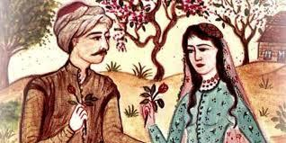

Tahir ile Zühre

Geçmiş zaman ve eski günlerde zengin ve şöhretli bir padişah vardır. Malı, mülkü, askeri kısaca her şeyi vardır Ancak çocuğu olmamaktadır Doktorlara gitmiş derdine çare bulamamıştır Bunlardan fayda göremeyince kendisini eğlenceye verir ve yaptırdığı bahçeye gidip gelmeye başlar
Bir gün veziri ile çarşıda dolaşmaya çıkar “Her kim bana bir altın verirse tanrı onun muradını versin” diyen bir dilenciye para verir Oradan ayrılıp bahçeye doğru giderler ve bir ağacın altında otururlar İleride bir ağacın altında da yaşlı bir derviş görürler, onun yanına giderler Derviş “marifetlerim vardır” deyince, padişah gönlünden geçeni bilmesini ister Dervişte padişah ve vezirin çocuğunun olmadığını, evlat istediklerini bilir Bunun üzerine dervişten yardım isterler Dervişte cebinden bir elma çıkarır ve ikiye böler Bu elmaları yerlerse çocukları olacağını, padişahın kızı, vezirin oğlu olacağını, ama onları ayırmamalarını, evlendirmelerini söyler Padişah da vezir de çok sevinir Akşam elmayı yerler ve dokuz ay on gün sonra padişahın kızı, vezirin oğlu olur Kızın adını Zühre, oğlanın adını Tahir koyarlar
Tahir ile Zühre birlikte büyürler En tanınmış hocalardan ders alırlar ve çok zeki olduklarından her şeyi öğrenirler Fakat on yaşında Zühre’nin gönlü Tahir’e düşer ve uyurken Tahir’i öper Tahir çok kızar çünkü kardeş olduklarını sanır Bir gün Zühre Tahir’i yine öper ve Tahir de Zühre’yi döver Zühre o kadar üzülür kiAllah’a “Allah’ım benim sevgimin yarısını Tahir’e ver” diye dua eder Tahir de Zühre’ye aşık olur Bu sefer Zühre kendini naza çeker Ancak kardeş olmadıklarını öğrenen Tahir ile Zühre günden güne bir birine daha çok bağlanırlar Sazlarını alıp birbirlerine türkü söylerler Bunları gören Arap köle padişahın karısına söyler
Padişah kızını Tahir’le evlendirmenin zamanı geldiğini söyler Ancak karısı kızının padişah oğluyla evlenmesini istemektedir Padişah kendi gözleriyle aşıkları görmek ister ve görünce de aşıkları evlendirmeye karar verir Bu arada Tahir rüyasında iki kara köpeğin kendisine saldırdığını görür ve rüyası çıkar Padişahın karısı, padişaha sihirbaz cadının yaptığı şerbeti içirince padişah Tahir’den soğur ve onu saraydan kovar Aşkı ile yanıp tutuşan Tahir, Zühre’nin köşkünün önüne gelerek sitem dolu türküler söyler Zühre de olayları dadısından öğrenir ve her şeyi Tahir’e açıklar Arap köle bunları görünce yine padişaha haber verir Bu sefer padişah onu Mardin’e sürer
Mardin’de yedi yıl kalan Tahir bir gün Allah’a dua eder ve onu zindandan kurtarmasını ister Duası kabul olur zindanın açılan kapısından siyah atıyla Hızır gelir ve onu atına alıp, o uyurken Zühre’nin köşkünün önüne bırakır Zühre Tahir’i dadısına gönderir O günden sonra her gece gizli gizli buluşup zevk ve sefa eylerler Fakat bir gün Tahir rüyasında yine kara köpeklerin etrafını sardığını görür Rüyası yine çıkar çünkü Arap köle onları yine görmüştür Bunu padişaha haber verir ve Tahir, üstü açık bir sandıkla Şat suyuna bırakılır
Şat suyu kenarında da Göl padişahının sarayı vardır Zühre bunu bildiği için Göl padişahının kızına mektup yazar ve göl padişahının kızları da onu bulurlar Göl padişahın üç kızı da Tahir’i sevmektedir ve bir gün onu paylaşamadıkları için kavga ederken, Tahir bunları duyar ve kaçar Bir çeşme başında dua eder ve uyur
At sesiyle uyanınca, yanında bir derviş görür Yine ata biner ve gözlerini kapatır Derviş “aç” dediği zaman Tahir kendisini Zühre’nin köşkü önünde olduğunu görür Dadısına gider Dertleşirler Bir gün Tahir davul zurna sesleri duyar ve dadısından Zühre’nin evleneceğini öğrenir Kadın esvabı ile düğüne giderKendini Zühre’ye tanıtır Ertesi gün Zühre ile anlaşırlar Hamama gitmek için çıkıp kaçmaya karar verirler
Ancak Arap köle de kadın kılığına girmiş ve onları görmüştür Arap köle durumu padişaha haber verirPadişah Tahir’i yakalatır Mecliste onu ve kızını anmadan üç hane türkü söylerse affedeceğini söyler Tahir iki haneyi söyler fakat üçüncü hanede Zühre’nin içeri girdiğini görünce onun ismini kullanır Padişah da onun boynunu vurdurmaya karar verir Cellat Tahir’in boynunu vurmadan Tahir namaz kılıp Allah’a ruhunu alması için dua eder ve hemen ölür. Bunu gören Zühre aklını kaçırır Hekimler çare bulamaz hatta Tahir’in etini yedirmeye çalışırlar ama dadısından bunu öğrenen Zühre’de çok kızar, Tahir’in mezarına gider Allah’a ruhunu alması için dua eder ve ölür Mezara gelen Arap köle de Zühre’ye aşık olduğu için kendini hançerle öldürür Padişah kızını Tahir’e vermediği için pişman olur ama iş işten geçmiştir
Bir süre sonra aşıklara mezar yapılır Arap köle de başuçlarına gömülür Oradan geçenler Zühre’nin mezarında beyaz bir gül fidanı, Tahir’in üzerinde ise kırmızı bir gül fidanı görürler Arap’ın mezarında da kara bir çalı bitmiştir Her sene aşıklar baltalarla o çalıyı keserler ancak çalının yine bittiğini görürlerZiyaretgah olan mezarı da aşıklar ve bağrı yanıklar sürekli ziyaret ederler